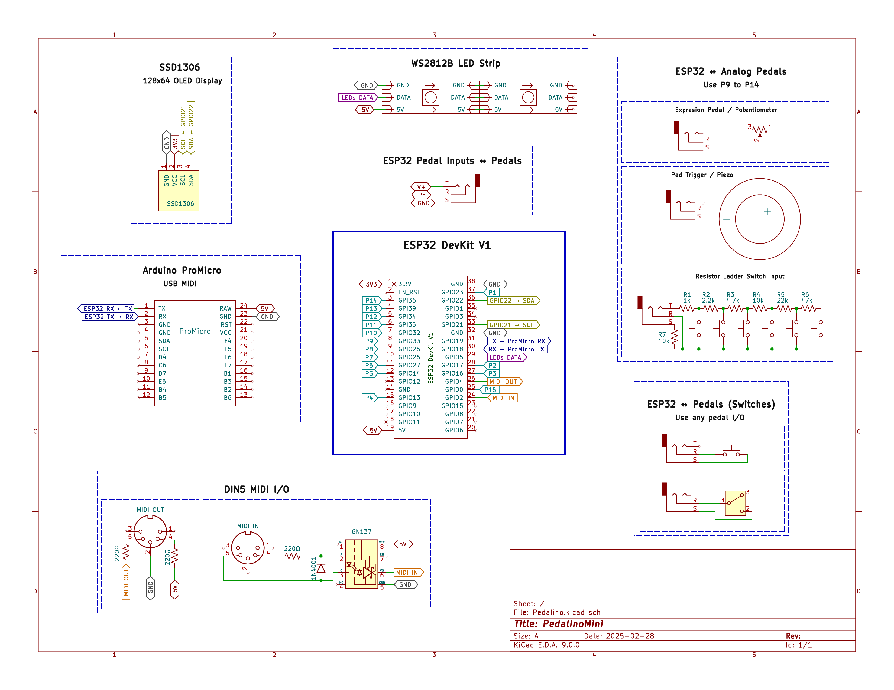

Schematic

×

Tip: Use mouse wheel to zoom in/out. Double-click to reset view. Click the expand button to open in full screen.
Floating Pins
You need to add pullup resistors on P9 to P14 (ADC GPIOs) otherwise pins will be floating. A floating pin can trigger unexpected MIDI events. As alternative you can disable the not used pedals via web interface.
Switch Ladder
To create your own ladder you can start simulating the below one: